A diff cannot show a hover or a focus ring. The pull request carries a film of the change, and design is picked on a board by looking.
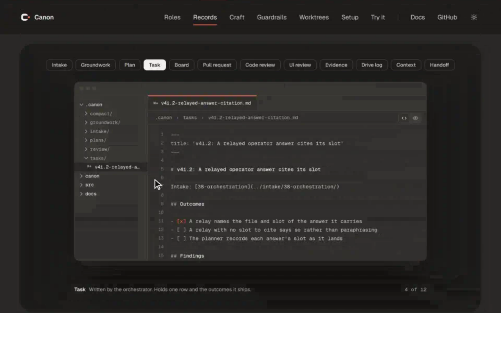
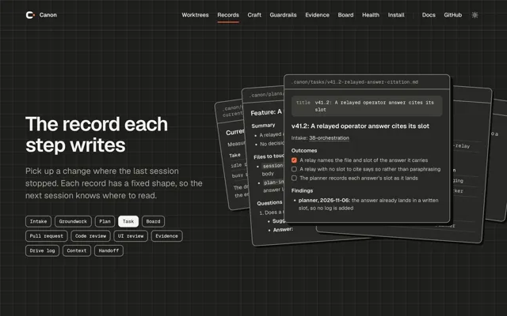
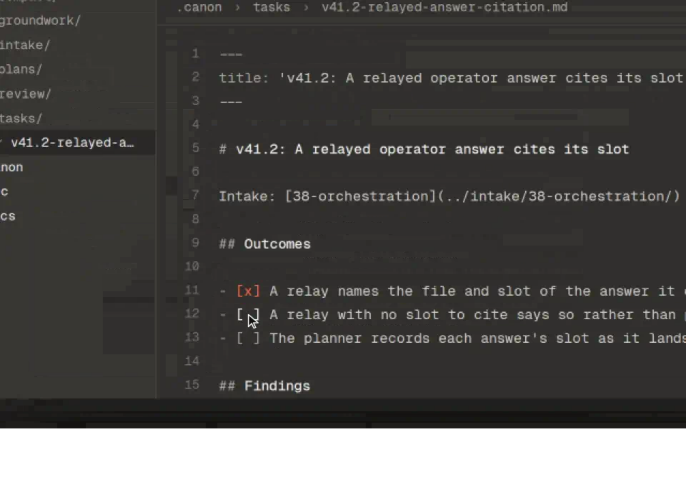
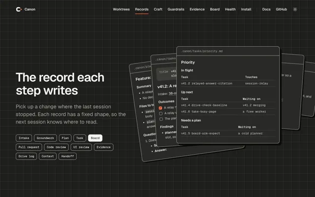
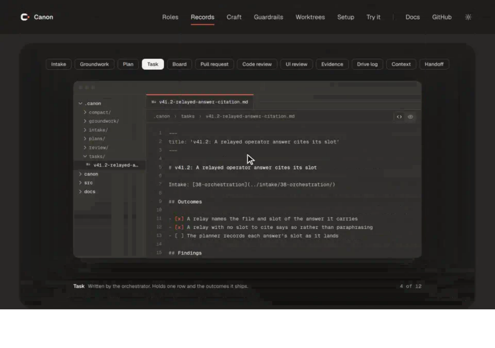
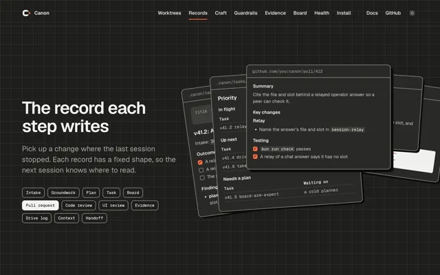
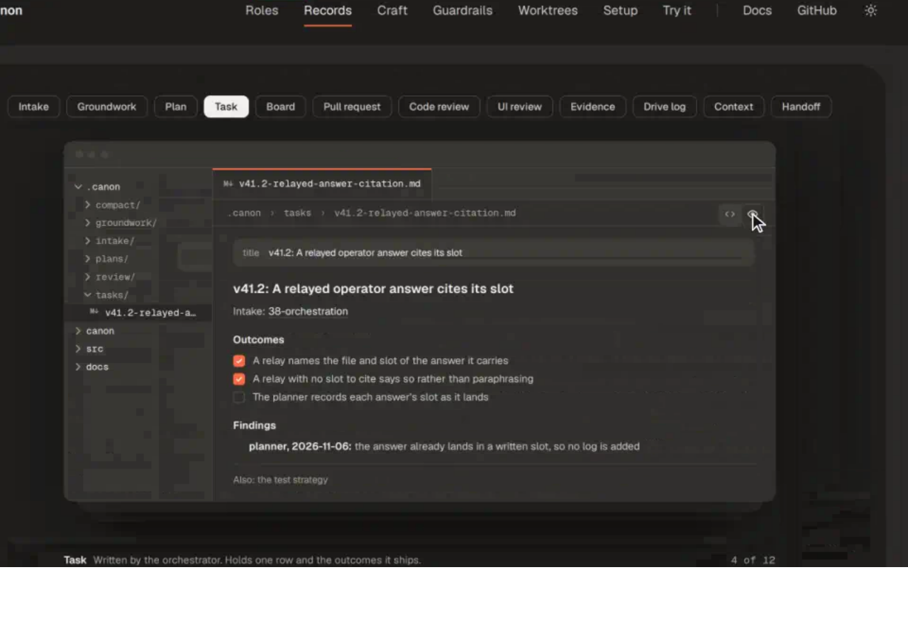
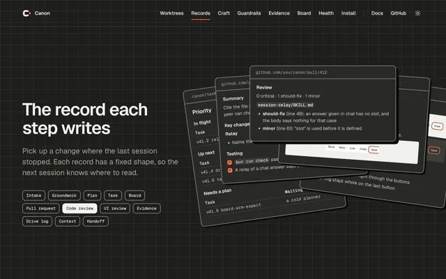
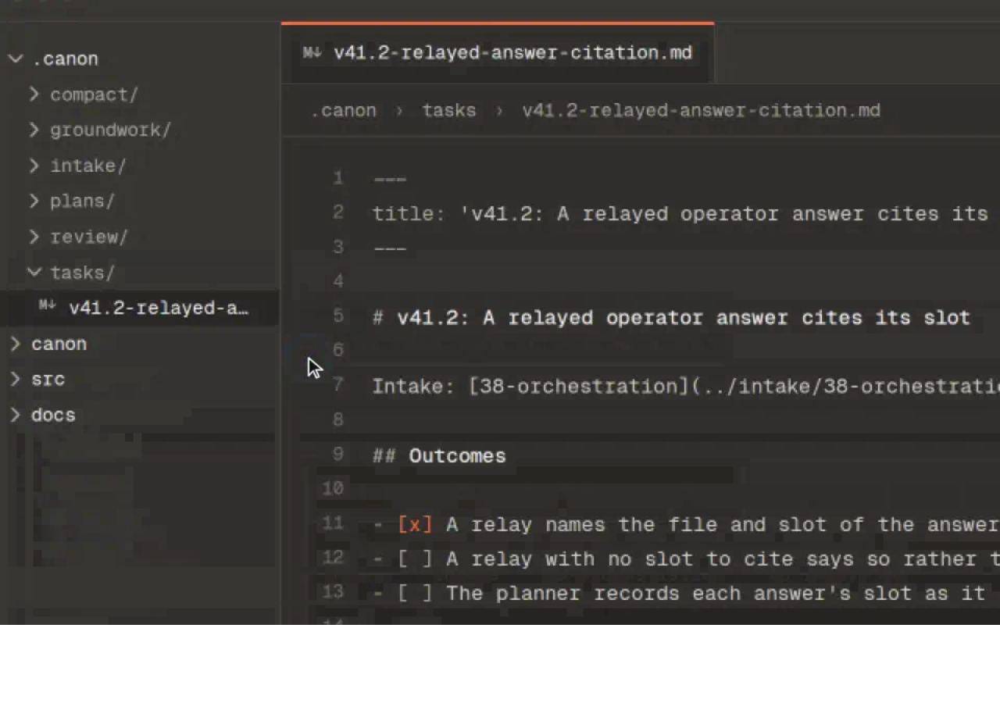
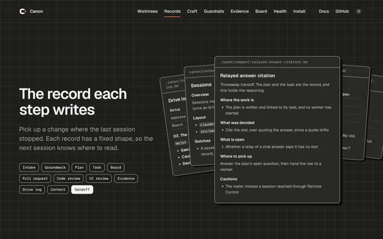
Which footer should the page take?
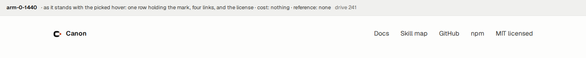
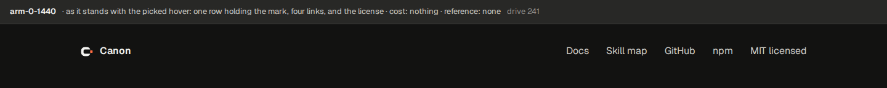
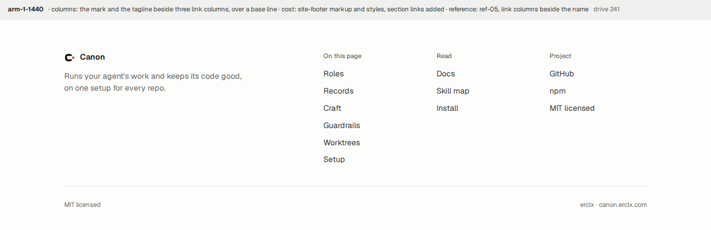
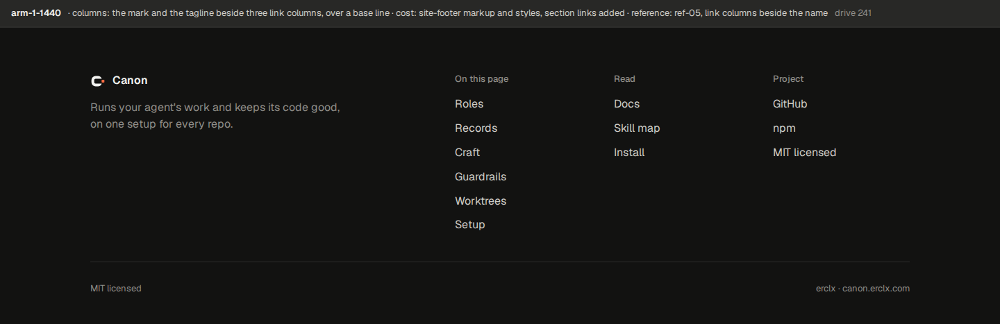
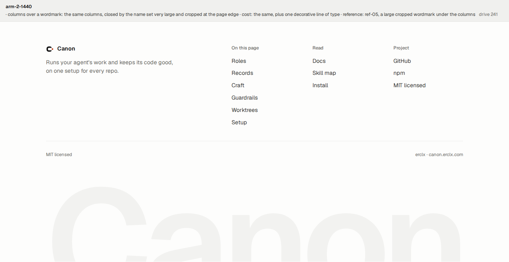
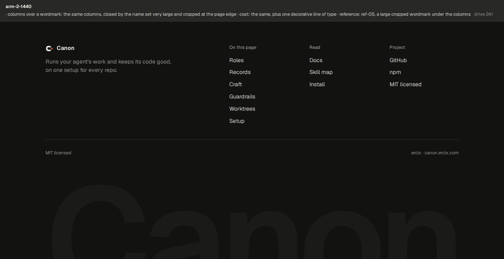
picked by the operator, by looking